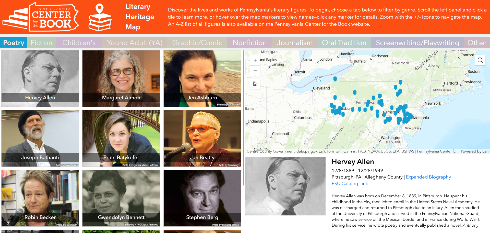
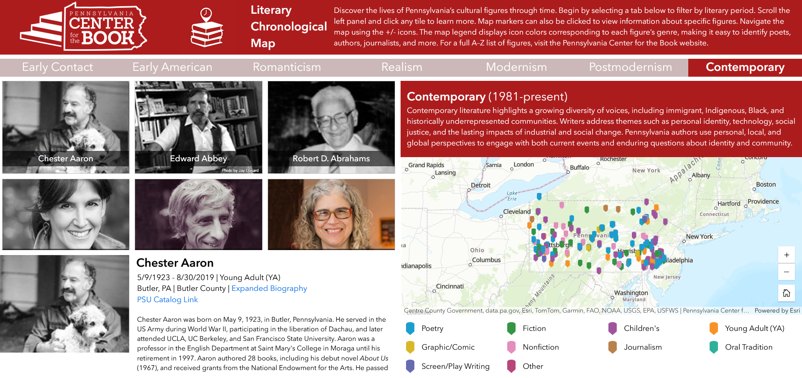
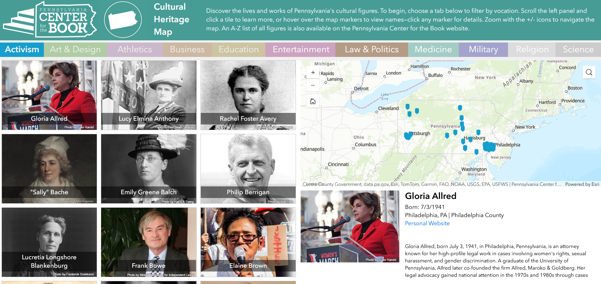

project information




pennsylvania center for the book cultural and literary heritage maps
client: erica king and the pennsylvania center for the book
description: several web maps created for the pennsylvania center for the book showing cultural and literary figures from pennsylvania�s history. these maps were previously created around 2020 using an older version of arcgis storymaps which would soon become unsupported (as of 2024). this project was updating and migrating the maps to arcgis experience builder, as well as re-designing the different map pages.
click the link to view these maps: https://pabook.libraries.psu.edu/literary-and-cultural-resources/literary-cultural-heritage-maps-pa
software used: adobe illustrator, arcgis experience builder, arcgis online